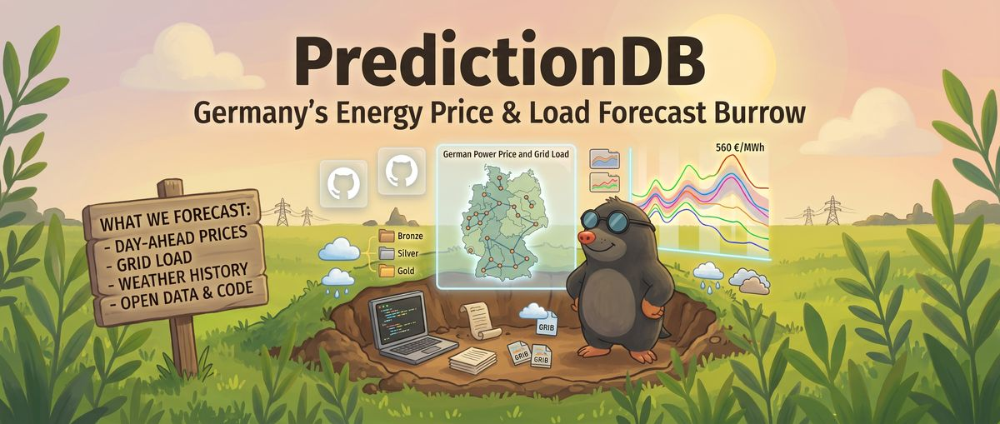

PredictionDB
Strombedarfs- und Strompreisprognose für Deutschland
Das Projekt
PredictionDB lädt regelmäßig die Prognosen freier Wettermodelle (NOAA GFS und GEFS) sowie Verbrauchs-, Erzeugungs- und Preisdaten aus frei verfügbaren Quellen wie SMARD, ENTSO-E und dem Marktstammdatenregister. Daraus trainiert es Modelle, die Strombedarf und Day-Ahead-Strompreis in Deutschland für die kommenden Tage vorhersagen. Modelle und Daten werden frei veröffentlicht, deshalb fließen nur Quellen mit freier Lizenz ein.
Prognose vom
Ab morgen erscheinen hier die Prognosen der Vortage zum Vergleich mit den Ist-Werten.
Frühere Prognosen
Aktuelle Prognose
Interaktives Dashboard mit der jüngsten Prognose von Last und Preis, täglich neu.
Zur Prognose →Anforderungen
$req_count
Stakeholder-, System- und Softwareanforderungen mit Architektur je Dienst nach ISO/IEC/IEEE 29148, als StrictDoc-Export.
Zu den Anforderungen →Traceability
Matrix der Beziehungen von den Stakeholder-Anforderungen bis zum Quellcode und den Tests.
Zur Matrix →Projektstatistik
Anforderungen nach Status, Abdeckung der Quelldateien und weitere Kennzahlen.
Zur Statistik → $test_cards $model_card